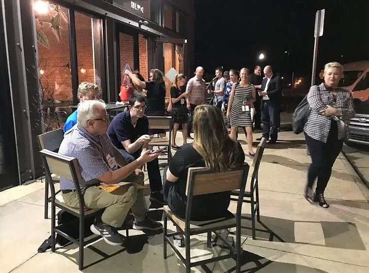
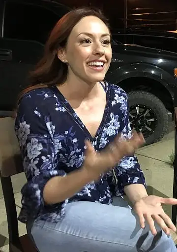
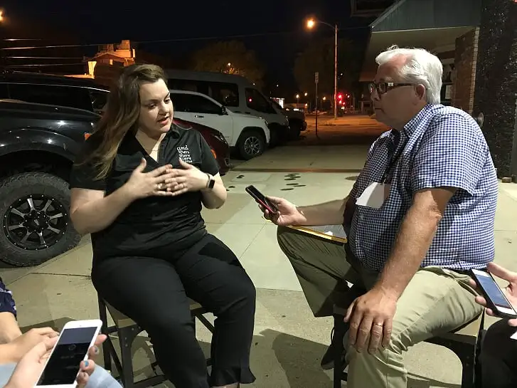
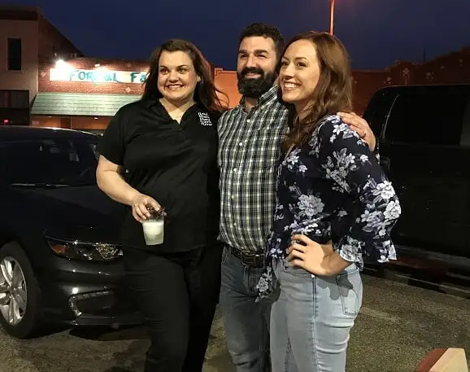

The name “Grace” came to Abby Johnson out of the blue one day while drying her hair during her pregnancy with her first child.
She recalled thinking, simply, “I like the name Grace!”
Though a Christian, Johnson had not yet come to fully recognize the conflicts her job presented regarding her faith. Nor had she realized what a fitting name Grace would come to be for her daughter, whose first months of her life played out with her mother as a Planned Parenthood manager.
“I look at how much my life was shaped because of my pregnancy with her, because of who she was,” Johnson says of Grace. “Being a mom…softened my heart to be able to listen to that whisper of God saying, ‘You can’t do this anymore.'”
Her revelation led eventually to a decision to leave the abortion giant, where she was steadily rising within the ranks, to dedicate her life to warning others of the organization’s deceptive aims and leading other workers away from the industry through her organization, “And Then There Were None.”

In May, Johnson talked about her journey with a group of faith-based reporters at a coffee shop in Oklahoma City during a break of the filming of “Unplanned,” the movie based on her memoir of the same title, which details her conversion and will be shown in theaters this spring.
Johnson said being on set of the film of her life story was interesting. The first scene she saw brought her face to face with a moment just after co-workers had given her a baby shower at the clinic. “Watching (the actress) walk out of the set and seeing her get in her car, and have a conversation with the person at the fence, it was very emotional for me,” Johnson says. “I’m watching…this confused person that I was, this person who was constantly trying to justify what she did…it was hard watching someone play the worst version of yourself.”

Ashley Bratcher (“War Room”) plays Johnson, and joined the discussion that evening, sharing a riveting discovery linking her to Johnson’s story. She’d only been on set four days when, in a phone discussion with her mother, she learned she’d almost been aborted.
“She said, ‘I was actually at the clinic,'” Bratcher said, recounting the story her mother told her of hearing her name being called, being led to the exam table, and deciding right there on the table that she couldn’t go through with it, and “got up and walked out.”
Later, when Bratcher asked her father about the near-abortion, he shared that he’d pawned his shotgun to pay for the procedure. “I thought, ‘Man, the price of a life is a shotgun?'” she said in recalling the conversation. “That, for me, was so clearly (evidence of) the hand of God, who planted me here to tell this story.”
Bratcher said some friends and even mentors warned her against playing the lead in such a controversial story, saying, “Don’t touch that role, you’ll never work again,” but she resisted, noting that she’d given her career to the Lord in 2012. “I came into this fearlessly…so I’m not scared of what’s to come.”
When asked the most challenging scene to film, Bratcher said, mentally and physically, it was the one showing Johnson experiencing an abortion of her own child through the abortion pill.
“It was almost like torture, hours of reliving this moment in her life….allowing myself to be emotional in every take to the point where I literally threw up in one of the takes,” she said.

That scene was also very hard for Johnson to watch, she admitted. “I went through that alone, and it was such a lonely time,” she said. “Seeing what I went through from a different lens…that’s going to be a hard scene (for others to watch).”
Nevertheless, Bratcher said she appreciated being part of the cast, and helping relay the overarching message of redemption. “The love that God has for us, this deep, personal love…is so much better than anything we could want for ourselves.”
Johnson also emphasized the positive message, sharing that most people working in the abortion industry have good intentions.
“I know what it is to have misguided passion, to be complicit in horrible things and still be loved and forgiven,” Johnson said. “We’re all broken, we can all do terrible things and fall away from our faith…but our minds can’t even fathom the mercy (God) has for us.”
Johnson recalled the alienation she felt after realizing her friends at Planned Parenthood had turned their backs on her, and how the people she’d once believed were the intolerant ones — the pro-life people — embraced her and “loved me just as I was.”
Bratcher said it was an honor to play a real person, though also daunting. “You have to be dedicated to honoring the authenticity of the story,” she said, noting that she came to realize how much like Johnson she is. “I’ve been called feisty a few times myself.”

“I watched her and I’m like, ‘That’s just like me,'” Johnson agreed. “She’s been able to channel (me) well.”
In a few scenes, Bratcher said, she used improvisation, only to learn Johnson had really said those same words. She credits the Holy Spirit with these moments of synchronicity. “I think because we’ve allowed the Holy Spirit to take over, there comes this peaceful hush over the set where this magic is happening before our eyes.”
Johnson says she hopes the film will be one that resonates with viewers — especially those who “maybe have a checkered past — a little bit of tarnish in their past.” She wants, most of all, for people to understand that “no one is too far gone from redemption, and healing is available to everyone. I hope that is the message this movie will most convey.”
Q4U: Have you read the book “Unplanned?” What insights did you come away with? What do you hope the movie will add to that?